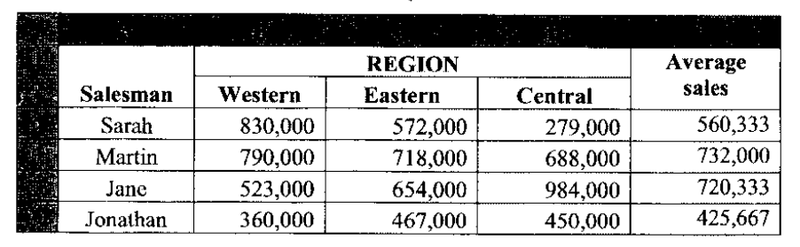

COMPUTER APPLICATIONS I (THEORY)
Exam Code: 2920/102A
Duration: 2 hours
Period: November 2017
State the full meaning of each of the following acronyms as used in desktop publishing: (i) WMT; (ii) EPS; (iii) TIFF; (iv) JPEG. WMT: Watermark Technology. EPS: Encapsulated PostScript. TIFF: Tagged Image File Format. JPEG: Joint Photographic Experts Group. Mercy intends to teach her class using a presentation program. Outline three ways she could run the slide show. Mercy can run the slide show in these three ways: From Beginning: Starts the slideshow from the first slide. This is typically initiated by pressing the F5 key or selecting "Start from Beginning" from the Slide Show menu. From Current Slide: Starts the slideshow from the slide currently selected in the normal view. This option is useful for previewing or resuming from a specific slide, often activated by Shift+F5 or selecting "Start from Current Slide." Presenter View: Extends the display across two monitors, showing the slideshow on the primary screen for the audience and presenter notes, preview of next slides, and controls on the secondary screen for the presenter. This mode is usually enabled in the Slide Show settings. Distinguish between hypertext and hypermedia as used in Internet programs. Hypertext: Hypertext refers to text that contains links to other text. These links, often called hyperlinks, allow users to navigate between related documents or sections of text in a non-linear fashion. The primary focus of hypertext is on textual information and the connections between different pieces of text. Early web pages were primarily hypertext-based, linking documents through textual anchors. Hypermedia: Hypermedia extends the concept of hypertext by incorporating various forms of media such as images, audio, video, and interactive elements in addition to text. Hypermedia links can connect not only text documents but also different types of media content. Modern web pages are predominantly hypermedia, integrating text, images, videos, and interactive applications to provide a richer, more engaging user experience. Distinction: The key difference is the scope of content. Hypertext is limited to linked text, whereas hypermedia encompasses a broader range of media types linked together. Hypermedia is a superset of hypertext, evolving to include multimedia elements for enhanced communication and information delivery on the internet. Joan has been advised to use macros to run various repetitive tasks in a word processing program. Outline four advantages of using this feature. Four advantages of using macros in word processing are: Automation of Repetitive Tasks: Macros record and replay sequences of actions, automating tasks that are performed frequently. This reduces manual effort and ensures consistency in repetitive operations like formatting documents, inserting standard text, or running complex command sequences. Increased Efficiency and Speed: By automating tasks, macros significantly speed up workflows. Operations that might take several minutes to perform manually can be executed in seconds with a macro, boosting productivity and saving time for users who regularly perform these tasks. Improved Accuracy and Consistency: Macros perform pre-defined actions precisely every time, minimizing human errors that can occur in manual repetitive tasks. This ensures consistency in document formatting, data entry, and other operations where uniformity is important across multiple documents or projects. Customization and Extensibility: Macros allow users to customize word processing software to suit their specific needs by creating custom commands and workflows. This extensibility makes the software more adaptable to specialized tasks and user preferences, enhancing its overall utility and functionality. Outline three applications of spreadsheet program in the banking sector. Three applications of spreadsheet programs in the banking sector are: Loan Amortization Schedules: Banks use spreadsheets to create detailed loan amortization schedules. These schedules automatically calculate and display the breakdown of each loan payment into principal and interest, along with the outstanding balance over the loan term. This helps both the bank and the borrower to understand the loan repayment structure. Financial Analysis and Reporting: Spreadsheets are used for analyzing financial data and generating reports. Banks can use them to analyze profitability, liquidity, and solvency ratios, track performance metrics, and create various financial statements for internal management and regulatory reporting purposes. Spreadsheets facilitate data manipulation and presentation through charts and graphs. Budgeting and Forecasting: Banks employ spreadsheets for budgeting and financial forecasting. They can create detailed budgets for various departments, project revenues and expenses, and perform scenario analysis to assess financial risks and opportunities. Spreadsheets enable banks to model different financial scenarios and make informed strategic decisions. Differentiate between form header and page header as used in databases. Form Header: A form header appears at the very top of a database form in Form View. It is displayed only once at the beginning of the form, regardless of how many records are being viewed or how long the form is. The form header is typically used to display the title of the form, company logos, or navigation buttons that apply to the entire form. Content in the form header remains static as you navigate through different records within the form. Page Header: A page header, in the context of database reports or forms set up for printing, is displayed at the top of each printed page. If a form or report spans multiple pages when printed, the page header will repeat at the top of every page. Page headers are commonly used to include information that should appear on every printed page, such as report titles, page numbers, dates, or company names, ensuring consistent identification and context across all printed pages. Key Difference: The primary distinction is their scope and repetition. A form header appears only once at the top of a form in Form View on screen. A page header, on the other hand, is designed for printed output and repeats at the top of every printed page if the content spans multiple pages. Form headers are for on-screen form context, while page headers are for printed document context and continuity. Lucy set the printer settings as shown in Figure 1 while attempting to print a presentation document. Use it to answer the question that follows. Describe the expected print output after she clicks the ok button. Based on Figure 1 printer settings, the expected print output will be: Print Range: Current slide and Selection: Only the currently selected slide and any slides selected by the user in the 'Selection' option will be printed. The figure shows 'Current slide' is selected, and there is no explicit 'Selection' range specified in the image, so it will likely print just the current slide. Copies: 3: Three copies of the selected slide(s) will be printed. Print what: Handouts, Slides per page: 3, Order: Horizontal: The output will be in handout format, with 3 slides printed per page. The layout order of these slides on the page will be horizontal. Color/grayscale: Grayscale: The printout will be in grayscale (black and white), even if the original presentation is in color. Other Settings: 'Scale to fit paper', 'Frame slides', 'Print hidden slides', and 'High quality' are checked, implying these features are enabled. Therefore, slides will be scaled to fit the paper size, framed with borders, hidden slides (if any in the selection) will be printed, and printing will be at high quality. In summary, Lucy will get three copies of the current slide, printed in grayscale, handout format with 3 slides per page in a horizontal order, scaled to fit paper, framed, and printed at high quality, including any hidden slides if selected within the 'Selection' range. Bitech Company intends to use distributed operating systems for their management information system in its various branches. Outline four benefits the company would get from this move. Four benefits Bitech Company would gain from using distributed operating systems are: Enhanced Reliability and Fault Tolerance: In a distributed system, processing and data are spread across multiple computers. If one system fails, others can continue to operate, ensuring system availability and minimizing downtime. This redundancy increases the overall reliability of the management information system, crucial for continuous business operations. Improved Scalability and Performance: Distributed operating systems allow for easy scaling of resources by adding more computers to the network as the company grows. This distributed processing power can handle larger workloads and more users compared to a centralized system, improving performance and responsiveness of the MIS across all branches. Resource Sharing and Collaboration: Distributed systems facilitate efficient sharing of resources and data across different branches of Bitech Company. Employees in different locations can access and collaborate on the same information and applications, improving teamwork and operational efficiency. Centralized data management becomes more accessible and manageable across geographically dispersed branches. Cost-Effectiveness and Flexibility: Distributed systems can be more cost-effective than maintaining a large centralized system. They allow for using commodity hardware and incremental scaling. Also, distributed systems offer greater flexibility, allowing the company to adapt to changing business needs and technological advancements more readily. Branches can operate more autonomously while still being part of a cohesive information network. Explain the function of each of the following system utilities: (i) disk cleanup; (ii) disk defragmenter. (i) Disk Cleanup: Disk Cleanup is a system utility designed to free up disk space on a computer's hard drive. It works by scanning the drive for files that can be safely deleted, such as temporary internet files, downloaded program files, recycle bin contents, and temporary system files. By removing these unnecessary files, Disk Cleanup helps to improve system performance and create more storage space for essential data and applications. (ii) Disk Defragmenter: Disk Defragmenter is a utility that reorganizes files on a hard drive to improve access speed. Over time, files can become fragmented, meaning parts of files are scattered across different locations on the disk. Defragmentation rearranges these file fragments to be contiguous, placing related parts closer together. This reduces the time it takes for the hard drive to read and write files, leading to faster file access, quicker application loading, and overall improved system responsiveness. Lydiah has been tasked to create a student magazine using a publishing program. (i) Outline three approaches she could use to create a new publication. Three approaches Lydiah could use to create a new magazine publication are: Using a Template: Lydiah can start by selecting a pre-designed magazine template from the publishing program's library. Templates provide a ready-made layout, including predefined styles, placeholders, and structures for a magazine. Customizing a template is a quick way to begin, allowing her to focus on content rather than layout design from scratch. Starting from a Blank Document: Lydiah could choose to begin with a blank document. This approach provides complete control over the layout and design. She would need to set up page margins, columns, master pages, and styles manually. This method is more time-consuming but allows for a fully customized and unique magazine design. Importing from Existing Document: If Lydiah has content prepared in another format, such as a word processing document or another publication file, she could import this content into a new publication. This allows reusing existing text and graphics, which can be then formatted and laid out within the publishing program to create the magazine. This approach is useful when content is already partially prepared. Assume she decided to use a master page for this publication. Explain two reasons for her decision. Two reasons for Lydiah to use a master page for her magazine publication are: Ensuring Design Consistency: Master pages allow Lydiah to create and apply consistent design elements across multiple pages of the magazine. Elements placed on a master page, such as headers, footers, page numbers, logos, and background graphics, will automatically appear on all pages that use that master page. This ensures a uniform look and feel throughout the magazine, enhancing its professional appearance and readability. Improving Efficiency and Workflow: Using master pages streamlines the design and editing process. Instead of manually adding repeating elements to each page, Lydiah can set them up once on the master page. This saves significant time and effort, especially for magazines with many pages. If a design change is needed for a repeating element, modifying the master page updates it across all associated pages simultaneously, simplifying revisions and maintaining design consistency efficiently. Distinguish between the functions of ruler guides and margin guides as used in desktop publishing programs. Ruler Guides: Ruler guides are non-printing lines that designers can drag from the horizontal and vertical rulers and position anywhere on the page in a DTP program. Their primary function is to aid in precise alignment and positioning of objects and text elements. Designers use ruler guides to visually align elements horizontally or vertically, ensuring accuracy and consistency in layout. Ruler guides are flexible and can be placed at any point on the page to facilitate custom alignment needs within the design area. Margin Guides: Margin guides are predefined non-printing boundaries that define the edges of the text area or printable area on a page. They are typically set up in the document setup or master page settings and define the space between the page edges and the main content. Margin guides ensure that text and important design elements are kept within a safe area, preventing them from being too close to the page edges or getting trimmed off during printing. They establish the overall boundaries for the content layout on each page. Distinction: The key difference is their purpose and flexibility. Ruler guides are for dynamic, user-defined alignment of individual elements anywhere on the page, offering precise control over object positioning. Margin guides are for setting static, document-level boundaries for content areas, defining the overall printable area and ensuring consistent spacing from page edges. Ruler guides are for detailed alignment, while margin guides are for page-wide content boundaries. Describe the mail merge feature as used in word processing programs. Mail merge is a word processing feature that allows users to create personalized documents for mass distribution, such as letters, envelopes, labels, and emails. It works by combining a main document with a data source (like a spreadsheet or database) that contains variable information (e.g., names, addresses). The process involves: Creating a Main Document: This is the template document containing fixed text and placeholders (merge fields) where variable data will be inserted. Preparing a Data Source: This is a file (e.g., CSV, spreadsheet, database) that holds the variable data organized in fields (columns) and records (rows). Each record represents a recipient, and each field corresponds to a piece of personalized information (e.g., first name, last name, address). Inserting Merge Fields: In the main document, users insert merge fields at locations where personalized information should appear. These fields are placeholders that correspond to column headers in the data source (e.g., «FirstName», «LastName»). Merging Data: The mail merge process combines the main document with the data source. For each record in the data source, it creates a copy of the main document, replacing the merge fields with the corresponding data from that record. Output Generation: The result is a set of personalized documents, where each document is customized with data from a different record in the data source. Output can be to print, email, or a new document file. Mail merge is efficient for creating bulk personalized communications, saving time and effort compared to manually creating each document individually. Figure 2 shows a section of tool bar that help database users to navigate and utilise forms. Use it to answer the questions that follow. (i) Identify the tools labelled I, II and III. Based on common database form navigation toolbars, the tools labelled I, II, and III are: I: First Record Button: This tool is typically used to navigate to the very first record in the current recordset of the form. II: Previous Record Button: This tool is used to move to the immediately preceding record in the recordset, relative to the currently displayed record. III: Next Record Button: This tool is used to advance to the immediately following record in the recordset, relative to the current record. Classify the tools as bound, unbound or calculated. Classifying the tools I, II, and III as bound, unbound, or calculated: I: First Record Button - Unbound: This tool is unbound. It performs a navigation action that is inherent to the form's functionality but is not directly tied to a specific data field or calculation. It controls the form's view of records but does not display or manipulate data itself. II: Previous Record Button - Unbound: This tool is also unbound for the same reasons as the 'First Record' button. It's a navigation control that manipulates the form's record pointer but doesn't interact with the data content directly. III: Next Record Button - Unbound: Similarly, the 'Next Record' button is unbound. It is a navigation control that manages record traversal within the form's dataset, without being linked to data display or computation. All three tools are navigation controls that are part of the form's interface to allow users to move through records. They are not bound to any specific data source field for display or calculation, making them unbound controls that manage form behavior. Explain the function of each of the following features as used in presentation programs. (i) record narration; (ii) rehearse timings. (i) Record Narration: The record narration feature in presentation programs allows users to add audio commentary to their slide shows. Users can record their voice as they go through each slide, explaining the content or providing additional information. This narration is then embedded into the presentation file. When the slideshow is played, the recorded audio plays automatically in sync with the slides, making it suitable for self-running presentations, online sharing, or creating training materials where verbal explanation is needed alongside visual content. (ii) Rehearse Timings: The rehearse timings feature enables presenters to practice and set the duration for each slide in a presentation. While rehearsing, the presentation program tracks the time spent on each slide. After the rehearsal, the program can automatically set these recorded timings to advance slides during a slideshow. This feature is useful for creating self-paced presentations, ensuring that each slide is displayed for an appropriate duration, and for practicing presentations to manage time effectively during live delivery. Explain the function of each of the following views as used in presentation programs: (i) outline; (ii) notes page. (i) Outline View: Outline view in presentation programs displays the presentation content in a structured, hierarchical text format. It shows slide titles and main text content in an outline structure, focusing on the text hierarchy and flow of information. This view is primarily used for organizing and editing the text content of the presentation, rearranging slides and bullet points, and getting a textual overview of the presentation's structure and logical flow. It simplifies content organization and sequencing without visual distractions of slide design elements. (ii) Notes Page View: Notes Page view displays each slide along with a dedicated notes section beneath it. This view allows presenters to add speaker notes for each slide. These notes are for the presenter's reference and are not visible to the audience during a normal slide show presentation. Notes Page view is used for preparing presentation scripts, reminders, or additional information that the presenter might need to recall or refer to during the presentation delivery. The notes can be printed out as presenter aids or viewed on a separate monitor in presenter view during the slideshow. Data integrity ensures the correctness and completeness of the data in the database. Explain three types of integrity constraints that could be enforced during the creation of databases. Three types of integrity constraints enforced during database creation to ensure data correctness and completeness are: Domain Integrity: Domain integrity constraints define the valid set of values for each column in a database table. This includes specifying data types (e.g., integer, text, date), value ranges, formats, and allowed values. By enforcing domain integrity, databases prevent entry of incorrect or inappropriate data types into columns, ensuring that each attribute holds values within its valid domain. For example, setting a domain constraint on an 'age' column to only accept positive integers within a reasonable range or ensuring that a 'date' column always stores valid date formats. Referential Integrity: Referential integrity constraints maintain consistency between related tables in a database. They ensure that relationships between tables are valid and that foreign keys correctly reference primary keys. These constraints typically involve rules like: a foreign key value must either match a value in the referenced primary key column or be NULL. Referential integrity prevents orphaned records and ensures that relationships between entities are consistently maintained. For instance, in a database with 'Orders' and 'Customers' tables, a referential integrity constraint ensures that every order is associated with an existing customer in the 'Customers' table. Entity Integrity: Entity integrity constraints ensure that each record (entity) in a table is uniquely identifiable. This is primarily enforced through primary key constraints. A primary key constraint requires that a column or set of columns designated as the primary key must have unique values and cannot contain NULL values. Entity integrity ensures that each row in a table represents a distinct entity and can be reliably identified and referenced. For example, setting 'StudentID' as the primary key in a 'Students' table ensures that each student record has a unique and non-empty identifier. State four examples of items that could be used as header and footer on the notes and hand out page of a Presentation. Four examples of items for headers and footers on presentation notes and handout pages are: Presentation Title: The title of the presentation to identify the subject matter of the notes or handouts. Date: The date of the presentation or the date when the notes/handouts were printed, for time context. Page Number: Page numbers to help organize and reference pages in multi-page notes or handouts. Company Logo/Name: A company logo or name for branding and to indicate the source or organization of the presentation materials. Table 2 is a worksheet extract showing total sales in Kenya shillings made by salesmen of a certain company. Use it to answer the questions that follow.  (i) Using a function and cell addresses only, write a formula that would be used to calculate the Average expenditure for Accounts department. Assuming 'Average expenditure' should be 'Average sales' and the sales figures for Sarah (Western, Eastern, Central) are in cells B3, C3, and D3 respectively, the formula to calculate the average sales for Sarah in cell E3 is: This formula utilizes the AVERAGE function to calculate the average of the values in the cell range from B3 to D3, providing the average sales for Sarah. Using the IF function, write a formula that would be used to enter a remark for Accounts department as "Excess Expenditure" when the average expenditure is over 80,000 and "Optimal Expenditure" when its less than 80,000. Assuming 'Accounts department' should be 'Sarah' and 'Average expenditure' should be 'Average sales' and the average sales for Sarah is in cell E3, the formula to enter a remark in cell F3 is: Correction: Based on the question description in 6(b)(ii) referring to average sales and the table provided, and question 6(b)(i) asking to calculate average expenditure for Accounts department which is from Table 1 (not Table 2) from previous page (which is not provided in this context, assuming it's a typo and should be average *sales* and referring to Table 2), and the remark conditions being based on average sales being over or under 700,000 (based on values in Table 2 example), the corrected formula using IF function for remarks in column F (assuming remark for Sarah is in F3) based on average sales in E3 is provided above. If the question intended to refer to "Expenditure" from a different table (Table 1 - not provided), and conditions were based on 80,000, then the formula would need adjustment based on that table's structure and cell references. Based on the provided Table 2 and context of sales, the formula above is relevant. If the intention was indeed about 'Expenditure' and 80,000 threshold, and assuming Average Expenditure for Accounts is calculated elsewhere (e.g., in cell G3, even though not in table 2), and we wanted remark for Accounts (row 1, assuming row 1 is for Accounts in Table 1, though Table 1 is not shown), and if average expenditure was in G3, then formula would be: However, given the context of Table 2 and sales data, the first formula is more likely to be relevant to the question as posed with Table 2 provided. With the aid of an illustration, write the expected results from the worksheet after performing each of the following commands on the data: (i) sorting the data using the salesman column. (i) Sorting by Salesman Column: Sorting the data by the 'Salesman' column in ascending alphabetical order would rearrange the rows based on the salesman's name. [Illustration: A table visually showing Table 2 data sorted alphabetically by Salesman name. The rows would be reordered so that 'Jane' appears first, followed by 'Jonathan', then 'Martin', and finally 'Sarah'. All data within each row (Region sales, Average sales) would move with the respective salesman's name.] Expected Result: The rows of the worksheet will be reordered alphabetically by salesman name, from Jane to Sarah, maintaining all corresponding sales data for each salesman in their respective row. filtering data with average sales greater or equal to 700,000. (ii) Filtering Average Sales >= 700,000: Filtering the data to show only rows where 'Average sales' is greater than or equal to 700,000 would display only salesmen who meet this sales threshold. [Illustration: A table visually showing only the rows from Table 2 where 'Average sales' is 700,000 or higher. This would include rows for 'Martin' and 'Jane', while 'Sarah' and 'Jonathan' rows would be hidden or not displayed.] Expected Result: The worksheet will display only the rows for 'Martin' and 'Jane', as their average sales are 732,000 and 720,333 respectively, which are greater than or equal to 700,000. Rows for 'Sarah' and 'Jonathan' with average sales below 700,000 will be filtered out and not displayed. The principal of VIBS College intends to extract the following information from the college's database. State the criteria that could be used to achieve this. (i) details of students admitted from 1/07/2015 to 31/12/2015; (ii) all students whose names begin with letter M. (i) Students admitted from 1/07/2015 to 31/12/2015: Criteria: The criteria to extract details of students admitted within this date range would involve filtering the 'AdmissionDate' field in the 'Students' table. The condition should specify a date range selection: This SQL-like WHERE clause selects records where the AdmissionDate is on or after July 1, 2015, and on or before December 31, 2015. Date format syntax might vary depending on the specific database system. (ii) Students whose names begin with letter M: Criteria: To extract all students whose names start with the letter 'M', the criteria would involve using a pattern matching or 'LIKE' operator on the 'StudentName' field: This SQL-like WHERE clause uses the LIKE operator with a wildcard '%'. 'M%' means any value in the 'StudentName' field that starts with 'M' followed by any sequence of characters. This will retrieve students with names such as 'Mary', 'Martin', 'Michael', etc. Mike created a birthday card using a publication program and inserted.. picture labelled "Original". He applied different formats on the origmal picture each time to achieve the images labelled (i), (ii), (iii) and (iv). State the picture formats that he applied to achieve each of the images. Based on visual analysis of images (i) to (iv) compared to "Original", the picture formats applied are: (i): Black and White: Image (i) is converted to black and white or grayscale. This format removes color information, displaying the image in shades of gray. (ii): Sepia: Image (ii) has a sepia tone applied. Sepia is a monochromatic color palette characterized by a brownish-red tone. This format gives the image an aged or vintage appearance. (iii): Watermark: Image (iii) appears to have a watermark effect. This format reduces the opacity of the original image, making it semi-transparent, often to place text or another image over it or to indicate copyright or draft status. (Note: While visually it looks like watermark, it could also be transparency effect.) (iv): Inverted Colors: Image (iv) shows inverted colors. This format reverses the color values of the original image, so dark areas become light and light areas become dark, and colors are replaced by their complements, creating a negative-like effect.1. (a) (4 marks)
Answer
1. (b) (3 marks)
Answer
1. (c) (4 marks)
Answer
1. (d) (4 marks)
Answer
2. (a) (3 marks)
Answer
2. (b) (4 marks)
Answer
2. (c) (4 marks)
Answer
2. (d) (4 marks)
Answer
3. (a) (4 marks)
Answer
3. (b) (3 marks)
Answer
3. (b) (ii) (4 marks)
Answer
3. (c) (4 marks)
Answer
4. (a) (5 marks)
Answer
4. (b) (3 marks)
Answer
4. (b) (ii) (3 marks)
Answer
4. (c) (4 marks)
Answer
5. (a) (4 marks)
Answer
5. (b) (6 marks)
Answer
5. (a) (2 marks)
Answer
5. (b) (3 marks)
Answer
=AVERAGE(B3:D3)6. (b) (ii) (2 marks)
Answer
=IF(E3>700000,"Excess Sales","Optimal Sales")=IF(G3>80000,"Excess Expenditure","Optimal Expenditure")6. (c) (3 marks)
Answer
6. (c) (ii) (2 marks)
Answer
6. (d) (4 marks)
Answer
WHERE AdmissionDate >= #2015-07-01# AND AdmissionDate <= #2015-12-31#WHERE StudentName LIKE 'M%'6. (e) (4 marks)

Answer